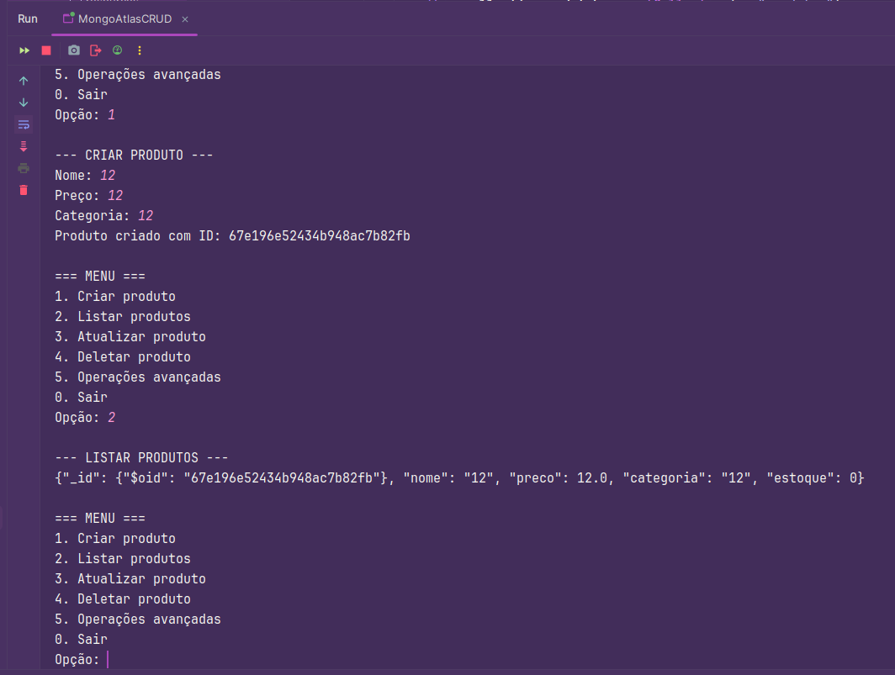
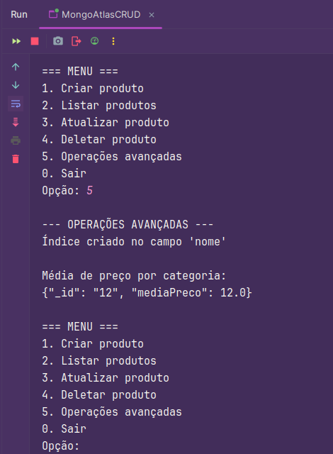
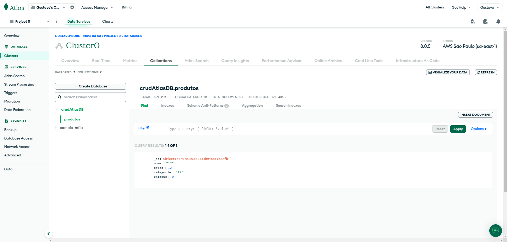

4. Testes Realizados
Execução do comando de criação de produto no terminal, mostrando o preenchimento dos campos obrigatórios:
Resultado da operação de leitura mostrando todos os produtos cadastrados no banco de dados:
 Saída da operação de agregação calculando médias de preço agrupadas por categoria de produtos:
 Visualização da coleção 'produtos' no MongoDB Atlas comprovando a persistência dos dados inseridos:

Last modified: 24 março 2025